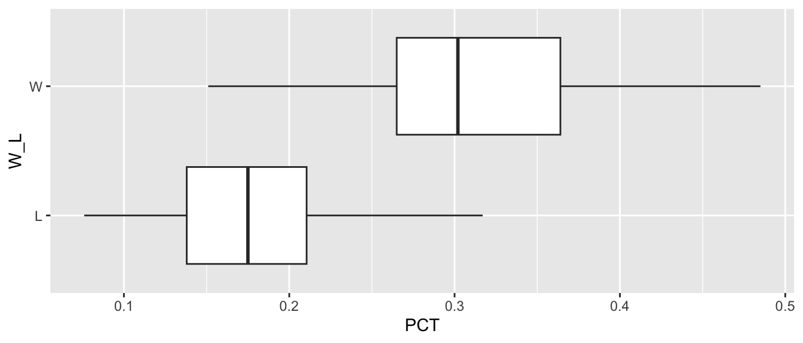
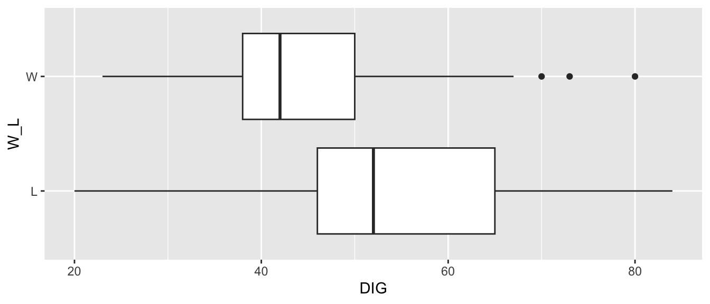

- About
- 1 Exploratory Data Analysis
- 2 Probability
- Chapter Preview
- 2.1 Definitions
- 2.2 Set Theory
- 2.3 Axioms, Properties, and Laws
- 2.4 Combinatorics
- 2.5 Odds and Gambling
- 2.6 Random Variables
- 2.7 Common Random Variables
- 2.8 Extra Stuff
- 2.8.1 Sets and Conditional Probability
- 2.8.2 Binomials and Multinomials
- 2.8.3 Expectation - Baseball
- 2.8.4 Basketball Scenario
- 2.8.5 Multiple Probability Distributions - Basketball
- 2.8.6 Law of Total Probability - Baseball
- 2.8.7 Multinomial Distribution - Baseball
- 2.8.8 Bayes - injured baseball player
- 3 Monte Carlo Simulation
- 4 Statistical Inference
- 5 Correlation
- 6 Linear Regression
- References
1.8 Volleyball
Volleyball rules Youtube video: https://www.youtube.com/watch?v=9g7nYQv-kPM
1.8.1 Basic Volleyball Statistics
- A Service Ace (SA) occurs when a player’s serve touches the ground on the other team’s side without being touched by a player on that side.
- A Kill (K) occurs when a player gets the ball over the net without it being returned by the opponent.
- An Assist (AST) is a pass made directly before a player makes a kill.
- Hitting Percentage (PCT) is the number of attempted kills (minus errors) divided by the total number of kill attempts. This helps determine how well a player or team is succeeding at their kill attempts.
Reference:
www.rookieroad.com
For Volleyball EDA, we will be using CSU Women’s Volleyball data from the last five seasons.
# Load CSU Women's Volleyball Data
csu_vb <- read_csv("data/csu_volleyball.csv")
colnames(csu_vb)[3] <- "W_L"
csu_vb %>% slice_head(n=10) %>% select(1:13) %>% kt()| Date | Opponent | W_L | SP | K | E | TA | PCT | AST | SA | SE | RE | DIG |
|---|---|---|---|---|---|---|---|---|---|---|---|---|
| 8/25/17 | Duke | L | 5 | 66 | 28 | 179 | 0.212 | 64 | 5 | 13 | 6 | 84 |
| 8/26/17 | Central Florida | W | 4 | 56 | 18 | 126 | 0.302 | 52 | 7 | 10 | 7 | 49 |
| 8/29/17 | Northern Colorado | W | 3 | 39 | 8 | 77 | 0.403 | 38 | 5 | 12 | 4 | 29 |
| 9/1/17 | vs TCU | W | 5 | 62 | 20 | 149 | 0.282 | 59 | 6 | 10 | 7 | 65 |
| 9/1/17 | vs UNC Asheville | W | 3 | 41 | 7 | 80 | 0.425 | 39 | 8 | 8 | 5 | 28 |
| 9/2/17 | at Florida State | W | 3 | 48 | 12 | 95 | 0.379 | 45 | 6 | 4 | 1 | 42 |
| 9/8/17 | Ball State | W | 4 | 59 | 24 | 145 | 0.241 | 56 | 6 | 8 | 3 | 44 |
| 9/8/17 | Michigan | W | 3 | 48 | 8 | 101 | 0.396 | 46 | 3 | 6 | 4 | 37 |
| 9/10/17 | Idaho State | W | 3 | 46 | 11 | 92 | 0.380 | 46 | 4 | 3 | 4 | 48 |
| 9/15/17 | UAlbany | W | 3 | 41 | 7 | 73 | 0.466 | 36 | 5 | 5 | 1 | 30 |
Let’s look at a scatter plot of hitting percentage and the number of digs. While no conclusions can be drawn from such a plot, it can give us some insight into relationships worthy of further analysis. Before creating the plot using the code below, think about what you might expect the outcome to be.
1.8.2 Scatter Plot
# Digs, Hitting Percentage, Win/Lose
dig_pct_viz <- ggplot(data = csu_vb, aes(x = DIG, y = PCT, color = W_L)) +
geom_point()
dig_pct_viz
Let’s change the axis titles, legend title, and add a main title.
dig_pct_viz +
labs(title = "Wins and Losses by Number of Digs and Hitting Percentage",
x = "Number of Digs (DIG)", y = "Hitting Percentage (PCT)",
color = "Win or Loss")
What can we learn from this visual? Well, we can see that there is a weak linear relationship between the number of digs and hitting percentage. To an extent, hitting percentage decreases as the number of digs increases. Why is this the case? Maybe if a team has a really high hitting percentage, this means that the opposing team does not have as many opportunities to attack the other team offensively, reducing the number of opportunities for digs. It also seems that while wins and losses are somewhat evenly spread across the number of digs, there is a more clear cutoff for hitting percentage. It seems that the majority of wins are associated with a hitting percentage of at least 0.2, while the majority of losses are associated with a hitting percentage of less than 0.3.
1.8.3 Box Plot
Now let’s take a closer look at the distribution of hitting percentage and digs for wins and losses. To do this, we will create box plots for each statistic.
pct_viz <- ggplot(data = csu_vb, aes(x = PCT, y = W_L)) +
geom_boxplot()
pct_viz
dig_viz <- ggplot(data = csu_vb, aes(x = DIG, y = W_L)) +
geom_boxplot()
dig_viz
Let’s modify these plots to make them more complete and visually appealing.
pct_viz +
labs(title = "Hitting Percentage for Wins and Losses",
x = "Hitting Percentage (PCT)",
y = "Win or Loss") +
geom_boxplot(fill = "slateblue", alpha = 0.2)
dig_viz +
labs(title = "Number of Digs for Wins and Losses",
x = "Number of Digs (DIG)",
y = "Win or Loss") +
geom_boxplot(fill = "slateblue", alpha = 0.2)
Box plots allow us to isolate each statistic (number of kills and hitting percentage) so we can more clearly determine the center and spread of each between wins and losses.